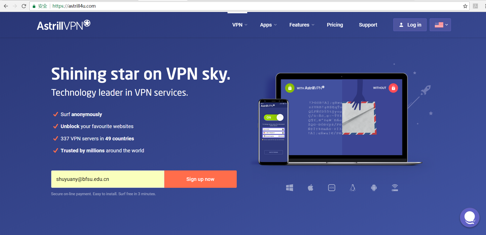
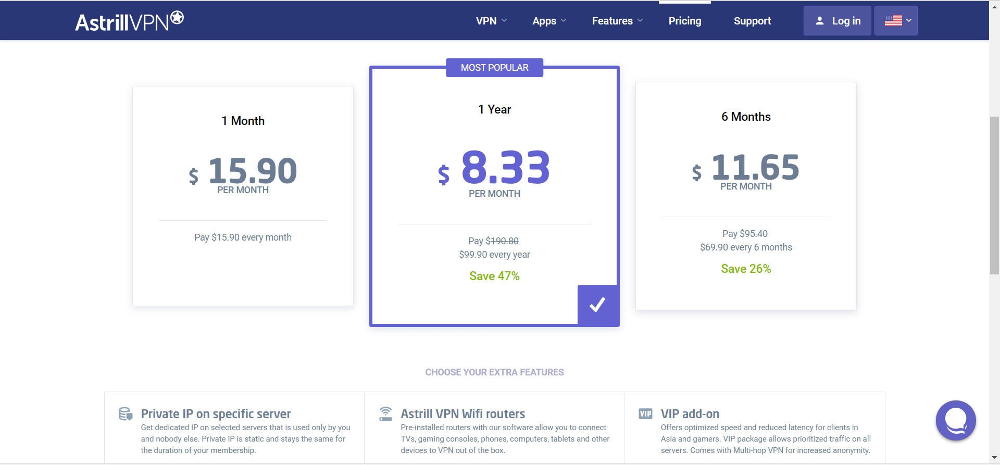
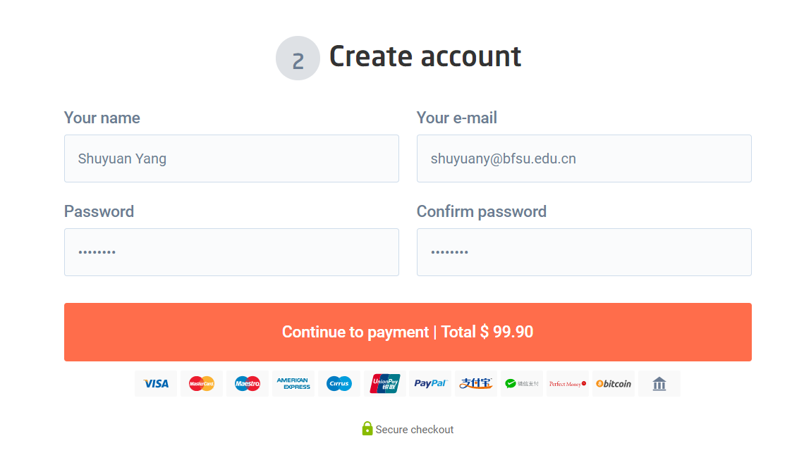
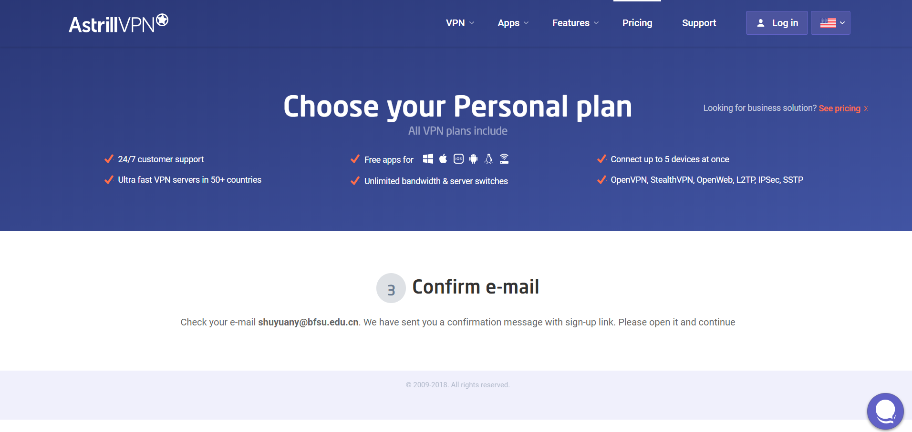
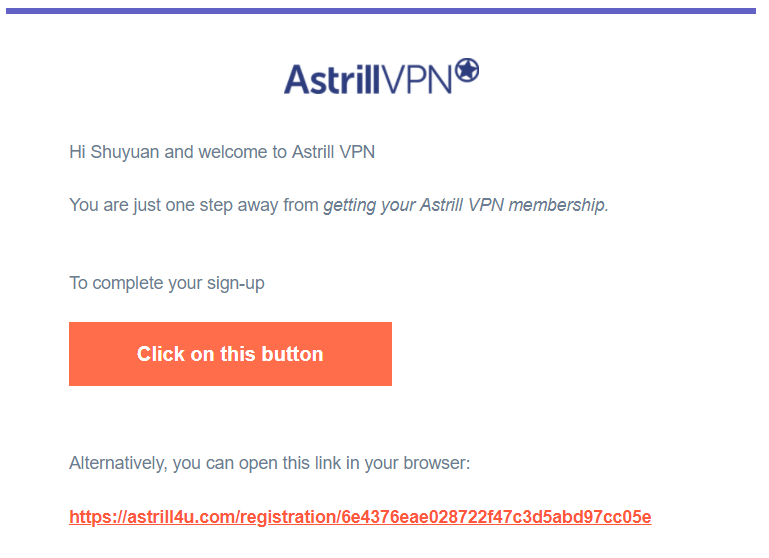
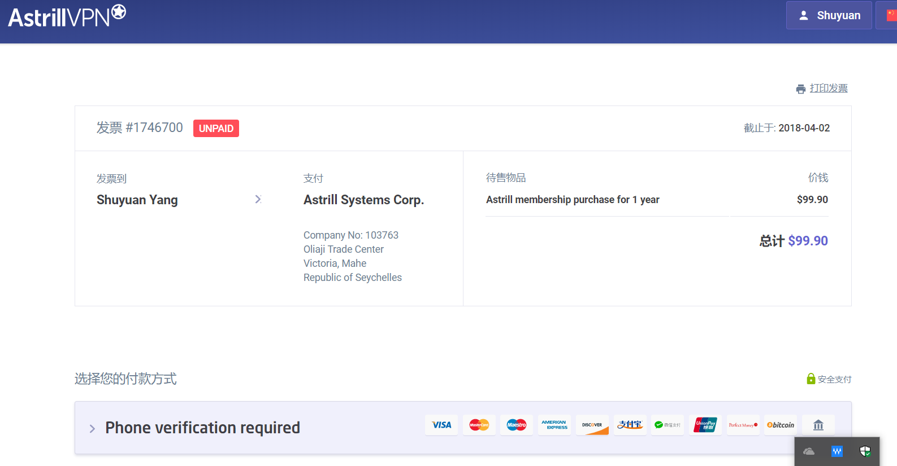
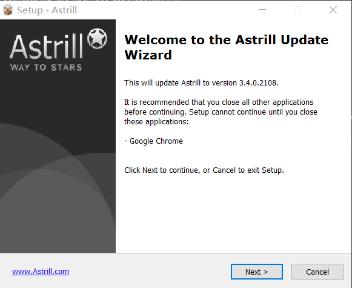
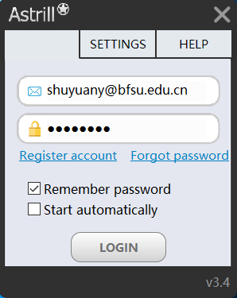
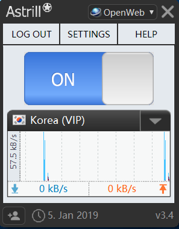

How to use Astrill?
1. Visit Astrill Homepage and sign up (using a valid email address).

2. Click Sign up now. On the next page, choose your plan,

and create your account and click Continue to payment.3. Choose your personal planandconfirm your email.
4. Finish the payment process.
5. When the purchase is over, we can go on downloading the Astriall application.
6. Click Apps and find what Astrill App you need.
7. Finish the download and install processes patiently (by clicking "Next >" non-stop). 
8. When the install is finished, log in with your Astill account. 
9. Click in App ON, and you are on.